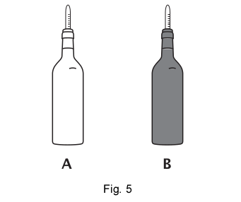

Lista de exemplos 7-52: Cores: síntese adtiva e síntese subtrativa
ÓpticaLista 7-52
01.
Uma fonte secundária de luz que se apresenta na cor azul possui tal cor porque:
a) refrata a luz incidente.
b) reflete a luz azul.
c) difrata a luz azul.
d) absorve a luz azul.
e) emite luz azul.
GABARITO: b)
02.
(UFPB) As folhas de uma árvore, quando iluminadas pela luz do Sol, mostram-se verdes porque:
a) refletem difusamente a luz verde do espectro solar;
b) absorvem somente a luz verde do espectro solar;
c) a visão humana é mais sensível a essa cor.
d) difratam unicamente a luz verde do espectro solar;
e) refletem difusamente todas as cores do espectro solar, exceto o verde;
GABARITO: a)
03.
(PUC) Um pedaço de tecido vermelho, quando observado numa sala iluminada com luz azul, parece:
a) preto.
b) branco.
c) vermelho.
d) azul.
e) amarelo.
GABARITO: a)
04.
Julgue as proposições a seguir:
I – As cores dos objetos são determinadas pela frequência da luz;
II – Quando um objeto é iluminado pela luz branca, parte dessa luz é absorvida e outra parte é refletida;
III – Um objeto que apresenta cor preta absorve toda a luz que recebe;
IV – Um material de cor branca não reflete nenhuma frequência de luz.
A sequência que apresenta a resposta correta é:
a) V, V, F, F.
b) F, F, V, V.
c) V, F, V, F.
d) F, V, F, V.
e) V, V, V, F.
GABARITO: c)
05.
(Enem 2016) Algumas crianças, ao brincarem de esconde- esconde, tapam os olhos com as mãos, acreditando que, ao adotarem tal procedimento, não poderão ser vistas. Essa percepção da criança contraria o conhecimento científico porque, para serem vistos, os objetos
a) refletem partículas de luz (fótons), que atingem os olhos.
b) refletem partículas de luz (fótons), que se chocam com os fótons emitidos pelos olhos.
c) geram partículas de luz (fótons), convertidas pela fonte externa.
d) são atingidos por partículas de luz (fótons), emitidas pelos olhos.
e) são atingidos pelas partículas de luz (fótons), emitidas pela fonte externa e pelos olhos.
GABARITO: a)
06.
Supondo que no interior de uma sala haja três objetos de cores distintas: verde, azul e vermelho. De que cor, respectivamente, veremos esses objetos se essa sala for iluminada por uma luz de cor azul?
a) Azul, azul e roxo.
b) Verde, azul e roxo.
c) Preto, azul e preto.
d) Todos azuis.
e) Branco, azul e branco.
GABARITO: c)
07.
(Enem 2014) É comum aos fotógrafos tirar fotos coloridas em ambiente iluminados por lampadas fluorescentes, que contêm uma forte composição de luz verde. A consequências desse fato na fotografia é que todos os objetos claros, principalmente os brancos, aparecerão esverdeados. Para equilibrar as cores, deve-se usar um filtro adequado para diminuir a intensidade da luz verde que chega aos sensores da câmera fotográfica. Na escolha desse filtro, utiliza-se o conhecimento da composição das cores-luz primárias: vermelho, verde e azul; e das cores-luz secundárias: amarelo = vermelho + verde, ciano = verde + azul e magenta = vermelho + azul.
Na situação descrita, qual deve ser o filtro utilizado para que a fotografia apresente as cores naturais dos objetos?
a) Ciano.
b) Verde.
c) Amarelo.
d) Magenta.
e) Vermelho.
GABARITO: d)
08.
(Enem 2009) Quando um objeto é iluminado, ele absorve algumas cores do espectro da luz incidente e reflete outras. A cor com que o objeto é visto será determinada pelas cores que ele reflete. Baseado no que foi exposto, analise as afirmações:
I. Um objeto branco, iluminado com luz verde, reflete a cor azul.
II. Um objeto vermelho, iluminado com luz branca, reflete a cor vermelha.
III. Um objeto preto é aquele que absorve todas as cores.
IV. Um objeto de vidro transparente azul tem essa cor porque reflete todas as cores.
As afirmativas corretas são:
a) I e II.
b) I e III.
c) II e III.
d) III e IV.
e) II e IV.
GABARITO: c)
09.
Uma bandeira brasileira tingida com pigmentos puros e iluminada com luz amarela monocromática é vista com que cores?
10.
Que roupas (claras, escuras, indiferentes) se deve utilizar sob sol intenso, numa região desértica?
Gabarito: Preferencialmente roupas claras, se possível de cor branca, pois absorvem menos energia.
11.
(EXAME NACIONAL 2008) A figura 5 representa duas garrafas de vidro, iguais, pintadas com o mesmo tipo de tinta, mas de cor diferente: a garrafa A foi pintada com tinta branca, enquanto a garrafa B foi pintada com tinta preta. As garrafas foram fechadas com uma rolha atravessada por um termómetro e colocadas ao Sol, numa posição semelhante, durante um mesmo intervalo de tempo.
Indique, justificando, em qual das garrafas se terá observado uma maior variação de temperatura,
durante o referido intervalo de tempo.

A maior variação de temperatura será observada na garrafa preta. Um objeto preto é um objeto que absorve radiação de muitas frequências, incluindo radiação infravermelho; tal objeto recebe, portanto, muita energia. Deste modo, é natural que a garrafa preta eleve mais rapidamente a sua temperatura ante o objeto de cor branca, que é um objeto que reflete muita radiação, incluindo radiação infravermelho.